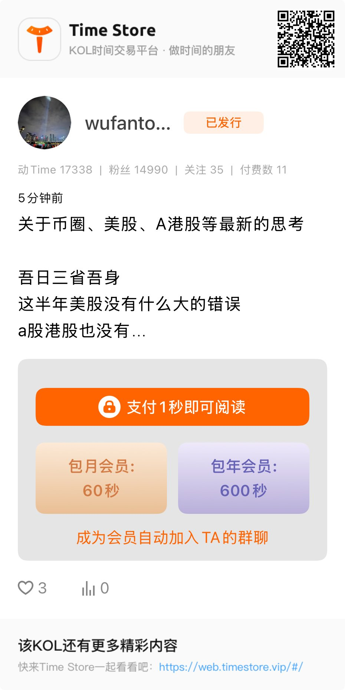

#1 · wufantouzi · 2026-06-06T10:10:51.000Z关于币圈、美股、A港股等最新的思考wufantouzi发布了一条动Time，点击查看https://web.tsdaq.com/#/time/pages/timeDetail/index?timeid=152900…https://web.tsdaq.com/#/time/pages/timeDetail/index?timeid=152900…
#4 · tothemoonjustin · 2026-06-06T11:54:37.000Z天呐。。原来真有人付费吗？ 好惊讶。。现在有各种AI,能读取各种数据做专业判断，你觉得他的学识和判断能力很高吗？ 他自己都没一个股票来回收割。。
#7 · 499317906 · 2026-06-06T10:13:12.000ZA港股当前PB估值吸引人，尤其消费和科技板块，但流动性仍是痛点。美股AI主题持续主导，加密市场则受益于机构入场和稳定币规模扩张，整体看好2026下半年风险资产的修复行情。
#9 · HougeSol · 2026-06-06T23:40:52.000Z一年亏掉学费才顿悟：散户想在A股赚钱，必须放弃个股思维！https://x.com/i/status/20634…This Post is unavailable. Learn moreLearn more